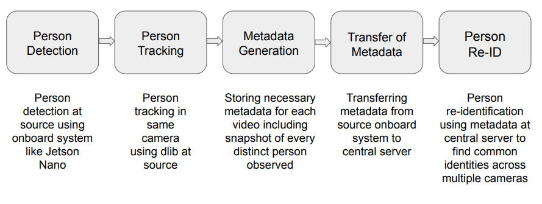
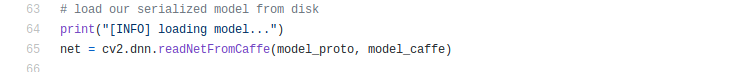
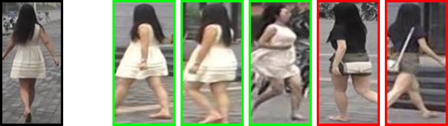

Introduction
A digital video surveillance system is a surveillance system capable of capturing images and videos that can be compressed, stored or sent over communication networks. Video surveillance can be used by governments for intelligence gathering, prevention of crime, the protection of a process, person, group or object, or the investigation of crime. It is also used by criminal organizations to plan and commit crimes, and by businesses to gather intelligence on their competitors, suppliers or customers. Though there are some disadvantages in certain applications, the field of surveillance has a great potential and hence is worth exploring.
Here we will try to understand how to implement an end to end surveillance system with ‘person’ or ‘human’ as a central part of our focus. This involves multiple steps like:
- Person Detection
- Person Tracking
- Person Re-identification (Person Re-ID)
Following is the basic pipeline of the process:

Fig 1: Flow of Person Tracking and Re-ID
‘Transfer of Metadata’ step can be skipped if our central system and data capturing system is one and the same. For our case this holds true and hence is skipped in the following process. Further information on this would be available here: (Github link)
Now let us consider each of the above steps one by one:
Person Detection
Normally person detection can be performed by two different techniques:
- Machine Learning (ML) based
- Non-ML based
Non-ML based algorithms are usually less accurate and require manual feature extraction, this becomes time-consuming and environment dependent in most cases. On the other hand in ML based techniques using neural networks it is possible to achieve human level accuracy along with decent speed. Hence we proceed with ML based person detection.
In neural networks based algorithms we specifically use Single Shot Detection (SSD) algorithm which processes the complete image for only one time and gives output as the bounding box coordinates detected persons in the image. This results in faster person detection overall.
Implementation details for Mobilenet-SSD:
For general image processing we use the popular library called ‘OpenCV’ (Link for installation). It has an inbuilt module named ‘dnn’ which can implement neural networks given the model structure and weights. Same has been used to implement Mobilenet-SSD as follows: (Source file)
- Define model weights and parameters:
- Load the model:

- Finally run the model to get output detection:
Implementation details for Yolo (This is also SSD):
For yolo we need to clone the official repository from darknet (Reference: Darknet). Same is also available here with necessary modification and weights for our project.
Once it is cloned we need to ‘make’ the module after some modifications in Makefile as follows:
- If we need to use GPU resources and have appropriate (Cuda) software installed, we can set GPU = 1
- Also set OPENMP = 1 to use process parallelization on CPU
- Set OPENCV = 1 to compile darknet with opencv (optional)
Once we have successfully executed the ‘make’ command we can test and run ‘yolo’ model for object detection. Note one would also need to download appropriate weights from this link.
Some modifications are required in file python/darknet.py for successful execution of further algorithms. These are already made here. One can save and replace the original file with this one.


Fig 2: Comparison between Yolo, Tiny Yolo and Mobilenet-SSD
Key observations in above detections:
- Accuracy wise ‘Yolo’ performs the best. Disadvantage here is the algorithm is slow and hence leads to higher running time.
- ‘Tiny Yolo’ is fastest among 3 but has some misclassification errors (like car/truck in above case).
- ‘Mobilenet-SSD’ has decent accuracy as well as less running time, but the algorithm is aggressive meaning multiple detections are shown for a single object in many cases. This can be removed to some extent by Non Maximum Suppression algorithm (which is already added to our final code).
Note that all the following process of tracking and Re-ID is algorithmically independent of whichever detection model we use above. So one can use any of the models depending on his/her requirements and available resources. We have codes available for all three of them on our github repository.
Person Tracking
Next we move on to person tracking. In simpler words we need to track each person according to his movements, in each future frame, once he has entered the frame and until he disappears from the frame. This can be done by a feature matching algorithm like surf or sift. But we specifically use the ‘dlib’ library which is common and quite accurate for such tracking tasks. (Reference: Pyimage Tutorial)
Overall dlib based tracking works as follows:
- Detect objects every ‘N’ frames using appropriate detection algorithm
- Filter out the objects we need to track (for our case ‘persons’) from all detected objects
- Provide bounding box coordinates to ‘dlib correlation tracker’
- For new frame update the tracker by calling ‘tracker.update()’ function
- Get positions of bounding box of our tracked object by function ‘tracker.get_position()’
- Update the image and repeat above procedure again
The main ‘dlib correlation tracker’ implementation is based on Danelljan et al.’s 2014 paper, Accurate Scale Estimation for Robust Visual Tracking. This work is actually built on the popular MOSSE tracker from Bolme et al.’s 2010 work, Visual Object Tracking using Adaptive Correlation Filters. While the MOSSE tracker works well for objects that are translated, it often fails for objects that change in scale. This is handled better by Danelljan’s work mentioned earlier.
Note that we do not require to run our detection algorithm again to only track the objects once they are detected, this helps us reduce our computation time as detection is a more heavy task compared to solely tracking. But on the other hand if we completely avoid detection in future frames we can actually miss the new ids (persons) who have entered into the frame after first detection. This is not acceptable. So we need to keep performing detection after every certain number of frames so that we do not miss a new entity. This idea is implemented in our code using a parameter called ‘skipframes’. It is exactly the number of frames after which the detection algorithm is called again. Ideal value of this parameter depends on our frame rate as well as camera view.

Fig 3: Tracking with dlib
Metadata Generation
Metadata implies data extracted from surveillance videos in real time which seems to be important for further analysis. Following are some significant advantages of extracting and storing metadata:
- Saves storage space as some videos of surveillance can be deleted (or not saved in the first place) considering their usefulness by preliminarily analysis
- Reduces computation time as well as amount of data to be crunched for further analysis as only important bits are stored
- Possibility of simultaneous analysis in case of multi-camera systems without any requirement of complete video recordings
We store following metadata from our camera input livestream:
- One snapshot of each new person entering in the frame
- Frame number, center coordinates and movement direction of each ID
- Frame number and IDs when contact between two IDs is possible (for contact tracing)
- Count of individuals or IDs in each frame
More or less metadata can be stored according to requirement in future analysis. Metadata is primarily stored in ‘txt’ format except for images to occupy minimal storage space.
To store this metadata we need to append to appropriate text files when our code is running. One such example can be observed in this code as shown in figure below:

Fig 4: Metadata generating code
For storing images we have a special function in our tracker program to store the snapshot (using OpenCV) whenever a new ID comes in and is in visible range (i.e. approximately in the center of the frame).
Examples of generated data are attached as follows:
Person Re-ID
This is the last step in our human surveillance system pipeline and also the most important one. Person Re-ID basically involves finding an image similar (if it exists) to a given particular image (called as query image) from a group of images (called as gallery).
This is generally very useful in case of multi-camera systems. Suppose we have metadata of snapshots of each and every IDs observed in two different cameras or scenes. And we need to find out if any person observed in camera 1 / scene 1 is also present in camera 2 / scene 2 so that we don’t consider them as two different persons. In this case the Person Re-ID algorithm can solve our problem. We can simply keep metadata of one of the cameras as our gallery and use every image of remaining metadata as our queries. This will find all the matching IDs (if any). This technique can be easily extended to more than two cameras and can also be used for a single camera (if we have recordings at different timestamps).
How is Re-ID done?
Our Person Re-ID algorithm works roughly as follows:
- Image classification network (Googlenet / resnet) with pretrained weights on Imagenet dataset is modified in the last layer. Number of outputs in the last layer are made equal to the number of distinct identities we have in our training data set.
- Last layer is re-trained from scratch keeping other layers fixed for certain epochs and the complete model is finetuned in later epochs. Basically we train the original image classification network to classify each image according to the person's ID in our training set.
- So doing the above steps we get a model which takes an image as an input and outputs a N-dimensional vector of probabilities (where N is no. of distinct identities in training data). This can be considered as a ‘feature vector’ for that image.
- During testing we calculate the ‘feature vector’ of our query image and try to match it with the ‘feature vector’ of each of the gallery images using suitable similarity measures to identify if both of them belong to the same ID or not. This is indeed re-identification.
Re-ID Testing
To test our Re-ID algorithm following pipeline is followed:

Fig 5: Re-ID Testing Pipeline
Other Details and Example
Dataset: We use Market-1501 open source dataset available on the web (Link). It has 750 identities for training and 751 for testing. Any other suitable person re-id dataset can also be used.
Environment and code: Pytorch was used as our primary ML library. Suitable modifications were made on ‘Torchreid’ library licensed by MIT.
Our complete code for Person Re-ID is available on github - (deep-reid)
Example: Output on Market1501 test image

Fig 6: Top 5 matches of given query image in gallery image set
About Me
Myself Nikunj Shah, I am a final year Dual Degree student in Mechanical Engineering at IIT Bombay. My specialization is in the subject Computer Integrated Manufacturing. My interests lie in the fields of Artificial Intelligence, Robotics and Automation. This blog presents the research & project work done as part of my Master's Project in my final year.
Email: nikunj10jun98@gmail.com
Guide Professor
Prof. Asim Tewari, Mechanical Engineering, IIT Bombay
Profile page: Faculty homepage
Email: asim.tewari@iitb.ac.in